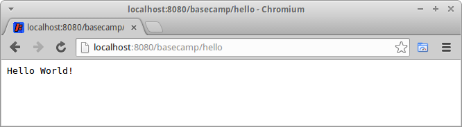

Getting started with Maven and Spring
Overview
This document outlines how to integrate the Restlet Framework with Maven and Spring. It is not a tutorial on using the Restlet Framework.
Prerequisites
The reader should be familiar with Maven, Spring and the Restlet Framework since it deals exclusively with integration issues. To play along you will need to have a version of Maven installed on your environment. The code in this document has been tested against Maven 2.2.1.
The Steps
Step 1: Create a Maven Project
We can use the Maven ‘archetype’ goal to quickly create a basic java project structure. We define the name of the artifact and the group (i.e. namespace) and the plugin will create a set of directories and some skeleton java source files. We will delete the App and AppTest source files since we will be creating our own classes.
mvn archetype:create -DgroupId=com.mycompany.basecamp -DartifactId=restlet-basecamp
restlet-basecamp/
restlet-basecamp/pom.xml
restlet-basecamp/src
restlet-basecamp/src/main
restlet-basecamp/src/main/java
restlet-basecamp/src/main/java/com
restlet-basecamp/src/main/java/com/mycompany
restlet-basecamp/src/main/java/com/mycompany/restlet
restlet-basecamp/src/main/java/com/mycompany/restlet/basecamp
restlet-basecamp/src/main/java/com/mycompany/restlet/basecamp/App.java
restlet-basecamp/src/test
restlet-basecamp/src/test/java
restlet-basecamp/src/test/java/com
restlet-basecamp/src/test/java/com/mycompany
restlet-basecamp/src/test/java/com/mycompany/restlet
restlet-basecamp/src/test/java/com/mycompany/restlet/basecamp
restlet-basecamp/src/test/java/com/mycompany/restlet/basecamp/AppTest.javaStep 2: Configure the POM
The pom.xml file generate from the previous step was for a ‘jar’ project. We are creating a ‘war’ project so we will make significant changes. The pom defines its dependency on some Restlet components, in particular the Spring and Servlet extension packages. It also defines the Jetty plugin since we will be running this web service in an embedded Jetty server.
<?xml version="1.0" encoding="UTF-8"?>
<project xmlns="http://maven.apache.org/POM/4.0.0" xmlns:xsi="http://www.w3.org/2001/XMLSchema-instance" xsi:schemaLocation="http://maven.apache.org/POM/4.0.0 http://maven.apache.org/maven-v4_0_0.xsd">
<modelVersion>4.0.0</modelVersion>
<groupId>com.mycompany.restlet.basecamp</groupId>
<artifactId>restlet-basecamp</artifactId>
<packaging>war</packaging>
<version>1.5</version>
<name>Bootstrapping Restlet Project</name>
<repositories>
<repository>
<id>restlet</id>
<url>https://maven.restlet.talend.com/</url>
</repository>
</repositories>
<dependencies>
<dependency>
<groupId>org.restlet.jee</groupId>
<artifactId>org.restlet</artifactId>
<version>2.0.1</version>
</dependency>
<dependency>
<groupId>org.restlet.jee</groupId>
<artifactId>org.restlet.ext.servlet</artifactId>
<version>2.0.1</version>
</dependency>
<dependency>
<groupId>org.restlet.jee</groupId>
<artifactId>org.restlet.ext.spring</artifactId>
<version>2.0.1</version>
</dependency>
</dependencies>
<build>
<finalName>basecamp</finalName>
<plugins>
<plugin>
<groupId>org.apache.maven.plugins</groupId>
<artifactId>maven-compiler-plugin</artifactId>
<configuration>
<source>1.5</source>
<target>1.5</target>
</configuration>
</plugin>
<plugin>
<groupId>org.mortbay.jetty</groupId>
<artifactId>maven-jetty-plugin</artifactId>
<version>6.1.25</version>
<configuration>
<contextPath>${basecamp.server.contextpath}</contextPath>
<scanIntervalSeconds>10</scanIntervalSeconds>
<webXml>${project.build.directory}/${project.build.finalName}/WEB-INF/web.xml</webXml>
</configuration>
</plugin>
</plugins>
</build>
<properties>
<basecamp.server.contextpath>basecamp</basecamp.server.contextpath>
</properties>
</project>Step 3: Create the BaseCampResource
We will create the simplest of resources, called BaseCampResource, which extends ServerResource and responds to the HTTP GET method. Note the use of annotations, which is part of the Restlet Framework. For the purpose of this document we will only define this simple resource.
package com.mycompany.restlet.basecamp.resource.demo;
import org.restlet.resource.Get;
import org.restlet.resource.ServerResource;
public class BaseCampResource extends ServerResource {
@Get
public String getResource() {
return "Hello World!";
}
}Step 4: Create the BaseCampApplication
In this step we define our Restlet Application, namely BaseCampApplication, which extends the core framework class. It’s not really required for this example but if you need to override base class behaviour this is how you would go about it.
package com.mycompany.restlet.basecamp.application;
import org.restlet.Application;
public class BaseCampApplication extends Application {
}Step 5: Sprinkle Some Spring
The application context, is used by Spring, to create and start the various components.
- basecampComponent is the Spring wrapper, which is a core framework class. This class references our application
- basecampApplication points to our application, which was developed in Step 4. It also reference the router, which determines how URLs are mapped to resource classes.
- router is the default router, which is also part of the core framework
- ’/hello’ is a reference to our resource class. Any bean name that starts with a forward slash (’/’) is assumed to be a route to a resource and as such is registered with the router. In this example we only define one resource and one route.
<?xml version="1.0" encoding="UTF-8"?>
<!DOCTYPE beans PUBLIC "-//SPRING//DTD BEAN 2.0//EN" "http://www.springframework.org/dtd/spring-beans-2.0.dtd">
<beans default-lazy-init="false" default-autowire="no" default-dependency-check="none" default-merge="false">
<bean id="basecampComponent" class="org.restlet.ext.spring.SpringComponent" lazy-init="default" autowire="default" dependency-check="default">
<property name="defaultTarget" ref="basecampAppliction" />
</bean>
<bean id="basecampAppliction" class="com.mycompany.restlet.basecamp.application.BaseCampApplication" lazy-init="default" autowire="default" dependency-check="default">
<property name="root" ref="router" />
</bean>
<!-- Define the router -->
<bean name="router" class="org.restlet.ext.spring.SpringBeanRouter" lazy-init="default" autowire="default" dependency-check="default" />
<!-- Define all the routes -->
<bean name="/hello" class="com.mycompany.restlet.basecamp.resource.demo.BaseCampResource" scope="prototype" autowire="byName" lazy-init="default" dependency-check="default" />
</beans>Step 6: Set up the web.xml
Finally, we need to configure the web.xml, which is packaged in the war. The important parts are the context-param entries. One points to the the SpringComponent class instance in our application context and the other points to the location of the application context file.
<?xml version="1.0" encoding="UTF-8"?>
<web-app xmlns="http://java.sun.com/xml/ns/j2ee" xmlns:xsi="http://www.w3.org/2001/XMLSchema-instance" id="restlet-basecamp" version="2.4" xsi:schemaLocation="http://java.sun.com/xml/ns/j2ee http://java.sun.com/xml/ns/j2ee/web-app_2_4.xsd">
<display-name>Restlet Basecamp</display-name>
<listener>
<listener-class>org.springframework.web.context.ContextLoaderListener</listener-class>
</listener>
<context-param>
<param-name>org.restlet.component</param-name>
<param-value>basecampComponent</param-value>
</context-param>
<context-param>
<param-name>contextConfigLocation</param-name>
<param-value>WEB-INF/applicationContext.xml</param-value>
</context-param>
<servlet>
<servlet-name>basecamp</servlet-name>
<servlet-class>org.restlet.ext.spring.SpringServerServlet</servlet-class>
<load-on-startup>1</load-on-startup>
</servlet>
<servlet-mapping>
<servlet-name>basecamp</servlet-name>
<url-pattern>/*</url-pattern>
</servlet-mapping>
</web-app>Step 7: Build It
To create the war file execute ‘mvn package’ in your shell. The war file will in the target subdirectory.
jima:restlet-basecamp jima$ mvn package
[INFO] ------------------------------------------------------------------------
[INFO] Building Bootstrapping Restlet Project
[INFO] task-segment: [package]
[INFO] ------------------------------------------------------------------------
[INFO] [resources:resources {execution: default-resources}]
[INFO] Copying 0 resource
[INFO] [compiler:compile {execution: default-compile}]
[INFO] Nothing to compile - all classes are up to date
[INFO] [resources:testResources {execution: default-testResources}]
[INFO] Copying 0 resource
[INFO] [compiler:testCompile {execution: default-testCompile}]
[INFO] Nothing to compile - all classes are up to date
[INFO] [surefire:test {execution: default-test}]
[INFO] Surefire report directory: /Users/jima/projects/restlet-basecamp/restlet-basecamp/target/surefire-reports
-------------------------------------------------------
T E S T S
-------------------------------------------------------
There are no tests to run.
Results :
Tests run: 0, Failures: 0, Errors: 0, Skipped: 0
[INFO] [war:war {execution: default-war}]
[INFO] Packaging webapp
[INFO] Assembling webapp[restlet-basecamp] in [/Users/jima/projects/restlet-basecamp/restlet-basecamp/target/summer]
[INFO] Dependency[Dependency {groupId=org.restlet.jee, artifactId=org.restlet, version=2.0.1, type=jar}] has changed (was Dependency {groupId=org.restlet.jee, artifactId=org.restlet, version=2.0.1, type=jar}).
[INFO] Dependency[Dependency {groupId=org.restlet.jee, artifactId=org.restlet.ext.servlet, version=2.0.1, type=jar}] has changed (was Dependency {groupId=org.restlet.jee, artifactId=org.restlet.ext.servlet, version=2.0.1, type=jar}).
[INFO] Dependency[Dependency {groupId=org.restlet.jee, artifactId=org.restlet.ext.spring, version=2.0.1, type=jar}] has changed (was Dependency {groupId=org.restlet.jee, artifactId=org.restlet.ext.spring, version=2.0.1, type=jar}).
[INFO] Processing war project
[INFO] Copying webapp resources[/Users/jima/projects/restlet-basecamp/restlet-basecamp/src/main/webapp]
[INFO] Webapp assembled in[112 msecs]
[INFO] Building war: /Users/jima/projects/restlet-basecamp/restlet-basecamp/target/summer.war
[INFO] ------------------------------------------------------------------------
[INFO] BUILD SUCCESSFUL
[INFO] ------------------------------------------------------------------------
[INFO] Total time: 4 seconds
[INFO] Finished at: Tue Nov 09 21:30:38 EST 2010
[INFO] Final Memory: 18M/81M
[INFO] ------------------------------------------------------------------------Step 8: Run It
To run the web service in an embedded jetty server simple execute “mvn jetty:run-war” this will compile and package the war file and then run it up inside a jetty servlet container. The web service will be available on localhost:8080 with a root context of ‘/basecamp’
jima:restlet-basecamp jima$ mvn jetty:run-war
[INFO] [jetty:run-war {execution: default-cli}]
[INFO] Configuring Jetty for project: Bootstrapping Restlet Project
[INFO] Context path = /basecamp
[INFO] Tmp directory = determined at runtime
[INFO] Web defaults = org/mortbay/jetty/webapp/webdefault.xml
[INFO] Web overrides = none
[INFO] Starting jetty 6.1.25 ...
[INFO] Started Jetty Server
[INFO] Starting scanner at interval of 10 seconds.If you now go to your web browser and enter the following URL the service, which you have just created, should respond with ‘Hello World!’

Accessing the resource via a browser
Finally, if you go back to the console, where you started the server you should see some logging similar to what is displayed below
Nov 9, 2010 9:34:31 PM org.restlet.engine.log.LogFilter afterHandle
INFO: 2010-11-09 21:34:31 0:0:0:0:0:0:0:1%0 - 0:0:0:0:0:0:0:1%0 8080 GET /basecamp/hello - 200 12 0 57 http://localhost:8080 Mozilla/5.0 (Macintosh; U; Intel Mac OS X 10_6_4; en-us) AppleWebKit/533.18.1 (KHTML, like Gecko) Version/5.0.2 Safari/533.18.5 -Step 9: Deploy It
You can also deploy the web service to a standalone web server such as Apache Tomcat using the Tomcat Maven Plugin. Basically, you need to define the plugin in your pom.xml and call ‘mvn tomcat:deploy’ and ‘mvn tomcat:undeploy’ to deploy and undeploy the web service respectively.
An minimal configured tomcat maven plugin is shown below but you should consult the documentation for the finer details.
<plugin>
<groupId>org.codehaus.mojo</groupId>
<artifactId>tomcat-maven-plugin</artifactId>
<configuration>
<server>${tomcat.server}</server>
<url>${tomcat.server.manager}</url>
<warFile>${project.build.directory}/${project.build.finalName}.war</warFile>
<path>${basecamp.server.contextpath}</path>
</configuration>
</plugin>Resources
This archive contains all the source code described in this document.
restlet-basecamp (application/zip, 8.4 kB)